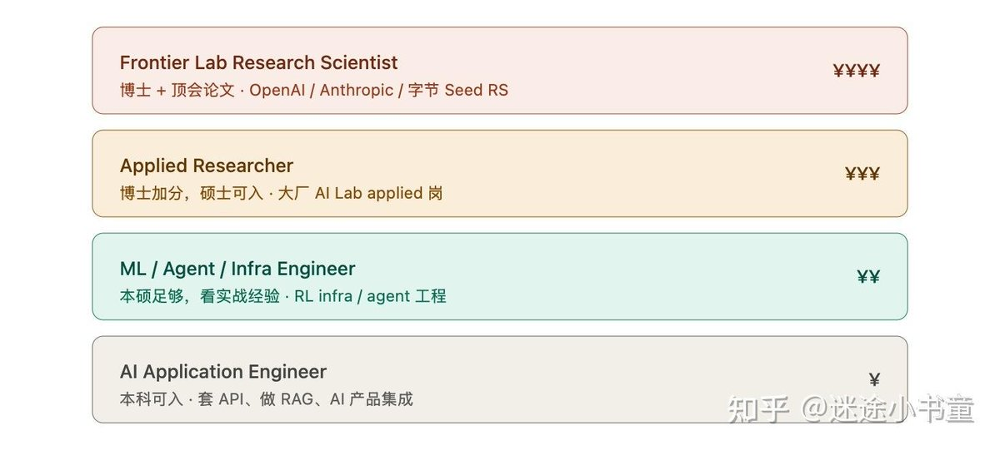

刷到了两次，每次看到该死的本科年收入80w cny我就想哈气。😾
我那个美丽的在读博士只能给我带来自费出版和一些不足以高频率学术活动的应该是奖学金的东西。😾
要是能重来绝对不选文科里的比较文学加政治哲学这种未来50年都赚不到可以躺平的资产的东西。😾

我那个美丽的在读博士只能给我带来自费出版和一些不足以高频率学术活动的应该是奖学金的东西。😾
要是能重来绝对不选文科里的比较文学加政治哲学这种未来50年都赚不到可以躺平的资产的东西。😾

终于看到有人能把“AI 行业读博工资翻(数)倍”这种天天有人吵架的观点形象地说通了
纯从钱的角度讲，本科能有年收入 60-80w CNY（乘三除以汇率换算等价 USD）的工作，读博 5-7 年一定是不值得的
对于拿不到这个收入的人，如果你读博不为了 Talent 那翻数倍的工资（2M+ CNY or 800K+ USD），那读博 5-7 https://t.co/ptJvG1CjoA
纯从钱的角度讲，本科能有年收入 60-80w CNY（乘三除以汇率换算等价 USD）的工作，读博 5-7 年一定是不值得的
对于拿不到这个收入的人，如果你读博不为了 Talent 那翻数倍的工资（2M+ CNY or 800K+ USD），那读博 5-7 https://t.co/ptJvG1CjoA